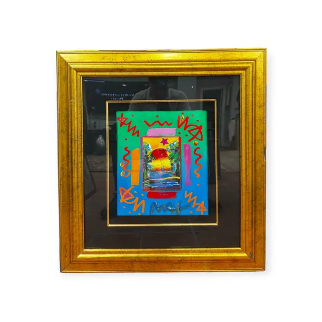
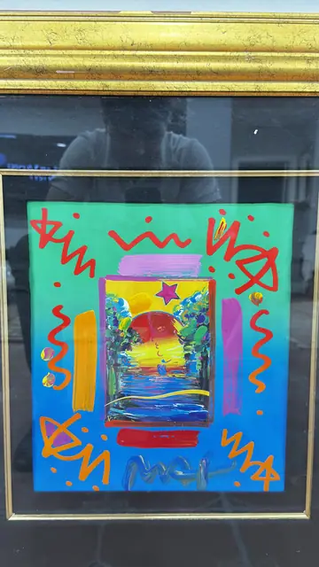
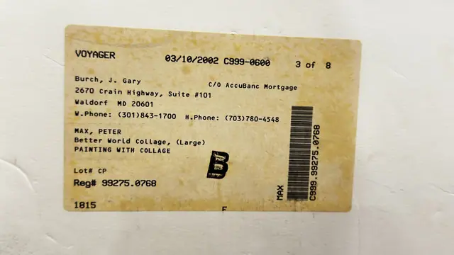

Paintings & Prints
Peter Max Better World Collage, Painted Mixed Media, MAX, PETER, Signed, Framed, 2002
MAX, PETER · late 20th century, sold 2002
Price Upon Request



About the Item
MAX, PETER. A small rectangular collage of a stylised sunrise landscape - a red-orange sun over layered hills, a lone tree and a striped foreground - is mounted just left of centre on a broad ground brushed in loose bands of grass green, turquoise and cobalt. Over the ground the artist has run quick orange, red and white gestural squiggles and drips, with a scrubbed pale halo around the collaged panel. A cursive painted signature sits at lower centre, and the sheet is floated on a black mat inside a heavy gold frame. Medium: acrylic and paper collage (label: PAINTING WITH COLLAGE). Signed lower centre, painted in blue, reading "MAX". Inscribed on the reverse or mount: VOYAGER 03/10/2002 C999-0600; Burch, J. Gary; C/O AccuBanc Mortgage; 2670 Crain Highway, Suite #101. Condition: No visible damage to the surface; heavy lamp reflections on the glass. Frame shows minor rubbing.
Details
- Creator:
- MAX, PETER
- Creation Year:
- late 20th century, sold 2002
- Dimensions:
- Height: 28.0 in (71.12 cm)
Width: 26.5 in (67.31 cm)
outside of frame - Medium:
- acrylic and paper collage (label: PAINTING WITH COLLAGE)
- Period:
- 21St
- Condition:
- Offered in the condition shown in the photographs.
- Reference Number:
- VO-219
- Documentation:
- no certificate; a printed sale/consignment label on the backing board records artist, title and medium
- Gallery Location:
- VOYAGER (auction/sale label, 03/10/2002)